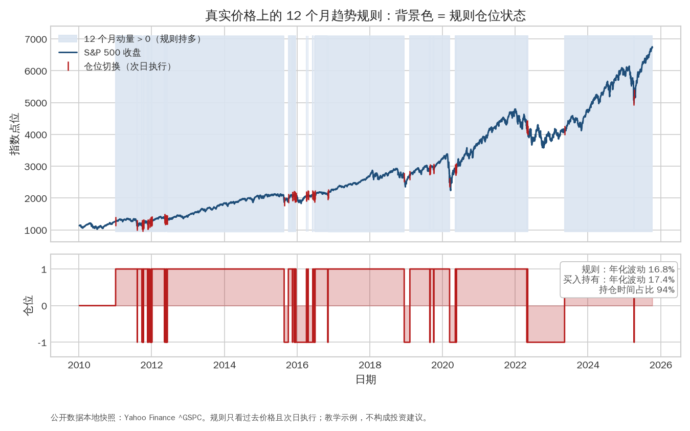
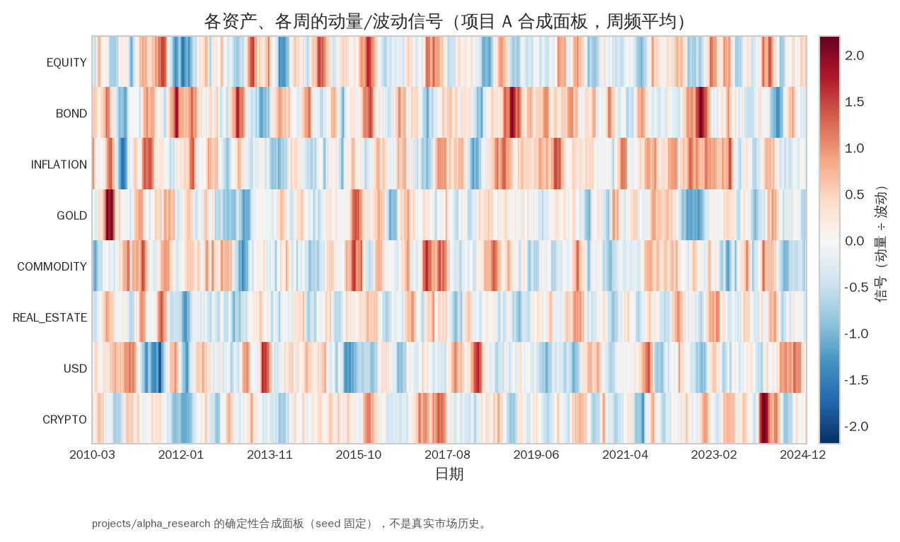
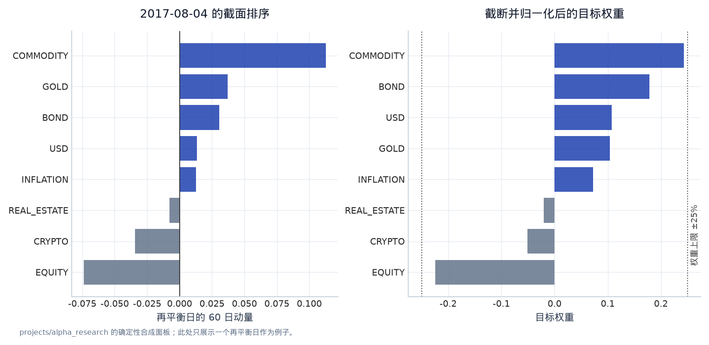
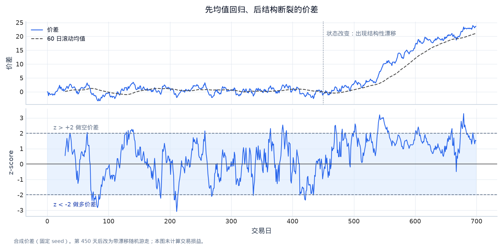
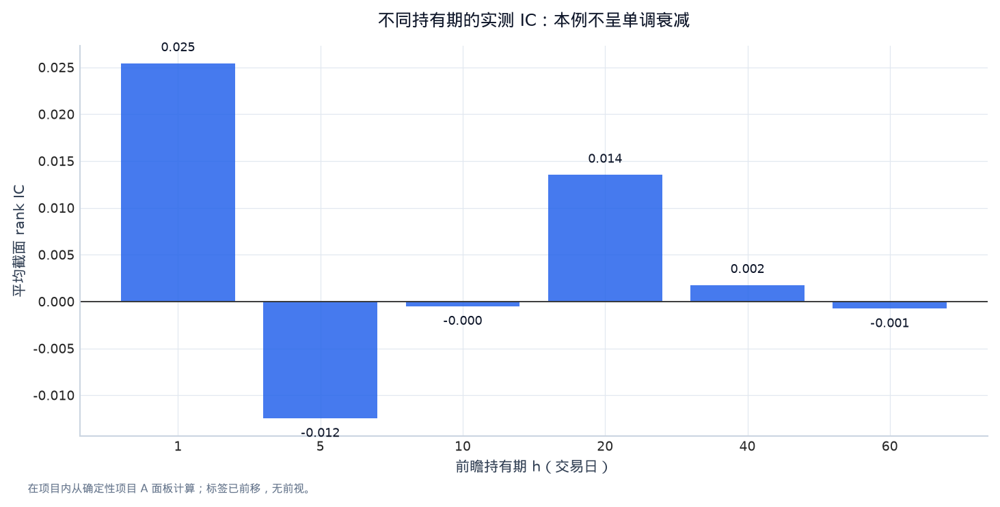
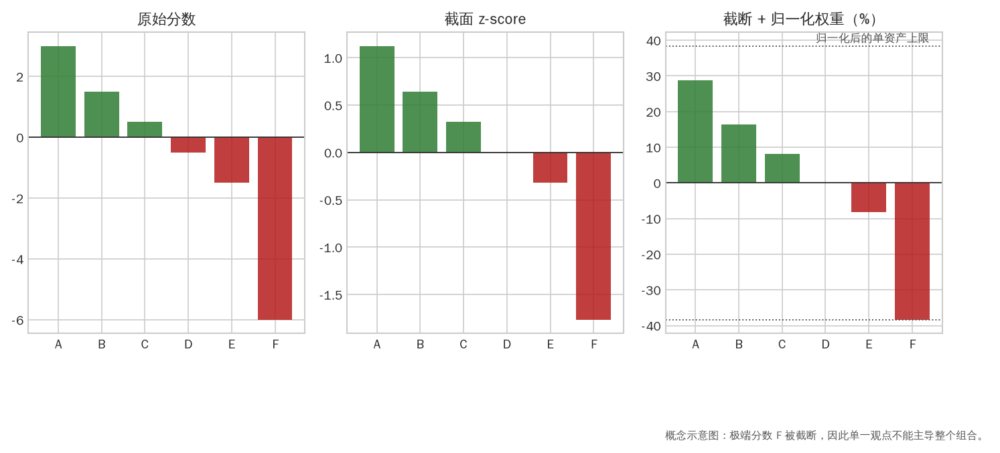

第五章：策略、Alpha 与信号研究（Strategies, Alpha and Signal Research）¶
“Alpha”不是神秘的预测分数，而是相对于明确风险与基准、在真实成本和约束后仍然存在的可归因收益。本章把常见策略按经济机制组织，并给出从想法到可交易信号的递进方法。
0. 学习目标¶
完成本章后，你应当能够：
- 区分 alpha、beta、risk premia、factor exposure 和 noise；
- 按持有期限和经济机制理解 trend、momentum、value、carry、mean reversion、statistical arbitrage、event-driven、market making；
- 把策略写成 universe、signal、portfolio、execution、risk 五个模块；
- 设计简单但有意义的 baseline，并用 IC、spread return、turnover、cost 后 Sharpe 评价；
- 解释一个信号为什么可能存在、为什么会消失、谁在交易它以及容量在哪里；
- 把项目 A 的跨资产趋势研究扩展成可复用的研究框架。
1. Alpha、Beta、Risk Premia 和 Noise¶
1.1 三种收益来源¶
对一个策略收益，可以概念性分成：
- alpha：在选定因子和 benchmark 后，剩余的可归因部分；
- beta/factor exposure：对市场、行业、利率、价值、动量、波动率等系统性因子的敏感度；
- epsilon：未解释噪声、测量误差或尚未建模的风险。
在交易研究中，alpha 还必须通过成本、容量和执行。一个预测准确但每次换仓都要付 30 bps 的信号，可能没有净 alpha。
1.2 Risk premia¶
Risk premium（风险溢价） 是承担某种系统性风险后长期期望得到的补偿，如股票风险溢价、信用溢价、流动性溢价、期限溢价。它与纯预测错误不同：溢价可能在坏状态中亏损，不能只看平均收益。
Factor（因子） 是一组可定义的收益或暴露，用来解释横截面或时间序列。常见风格包括 value、momentum、quality、size、carry、defensive/low risk。研究时要明确因子是资产返回的统计构造，还是有经济解释的风险来源。
2. 策略的五层结构¶
任何策略都写成五个独立模块：
- Universe（宇宙）：哪些资产可交易，流动性/价格/行业筛选何时知道；
- Signal（信号）：输入、窗口、方向、标准化、缺失处理；
- Portfolio construction（组合构建）：把分数变成权重，是否中性、风险平价或优化；
- Execution（执行）：订单类型、交易时点、容量、成本和延迟；
- Risk management（风险管理）：杠杆、行业、单名、波动、止损、流动性和异常监控。
这五层必须分开测试。若把 signal 的预测能力和 portfolio 的杠杆结果混在一起，就无法知道策略为什么赚钱或失败。
3. Trend/Time-Series Momentum（趋势/时间序列动量）¶
3.1 经济直觉¶
趋势策略假设资产收益存在一段时间的正自相关或价格趋势，可能来自行为偏差、风险管理者的渐进调仓、宏观趋势持续或流动性分层。它可以做多趋势向上的资产、做空趋势向下的资产。
最简单信号：
其中 \(L\) 是回看窗口。更平滑的版本使用 moving average、指数加权收益或 z-score：

图 5-1｜真实价格上的趋势规则。 背景色表示 12 个月动量规则的多头区间，红色竖线是仓位切换（次日执行），下方面板是规则仓位。规则只看过去价格：它在 2020 年和 2022 年的下跌中段离场，也在震荡期被反复 whipsaw。图中标注了规则与买入持有的年化波动和持仓时间占比。数据类型：公开数据本地快照（Yahoo Finance ^GSPC）；教学示例规则，不构成投资建议。
3.2 关键设计¶
- 窗口短，反应快但换手和 whipsaw 高；
- 窗口长，交易少但可能错过反转；
- 不同资产波动差异大，应做 volatility scaling；
- 组合需要限制总杠杆和单资产集中；
- 趋势翻转时，执行延迟和交易成本决定实际损益。
项目 A 使用跨资产趋势、逆波动权重和成本压力测试，就是一个完整的教学版本。研究报告要比较不同窗口、资产类别、波动目标和成本，而不是只展示一个最好的参数。

图 5-2｜信号在时间和资产上的结构。 热图每一行是一个资产、每一列是一周，颜色是动量除以波动后的信号值：红色看多、蓝色看空。可以看到信号在时间上成块持续（趋势状态），在资产间并不同步（分散化来源）。数据类型：projects/alpha_research 的确定性合成面板（seed 固定），不是真实市场历史。
4. Cross-Sectional Momentum（截面动量）¶
截面动量不是判断每个资产自身涨跌，而是在同一时点将资产按过去收益排序，买入赢家、卖出输家：
其中 skip 用来避免短期 reversal 和微观结构噪声。做多最高分组、做空最低分组，常做 dollar-neutral、beta-neutral 或 sector-neutral。
需要检查：
- 是否使用了当时不可知的 universe；
- 排名是否受极端价格和停牌影响；
- 赢家组合是否只是行业或市场 beta；
- 低价小盘股是否贡献大部分回测；
- 交易成本和借券是否吞掉 spread return。

图 5-3｜截面排序如何变成权重。 左图是某个再平衡日 8 个合成资产的 60 日动量截面排序；右图是按 |信号| 归一化并截断到 ±25% 后的目标权重。截断保证单一观点不能主导组合，归一化保证总杠杆可控——这两个约束必须在代码里显式存在。数据类型：projects/alpha_research 的确定性合成面板。
5. Mean Reversion 与 Statistical Arbitrage¶
5.1 直觉和风险¶
均值回归假设价格、价差或收益在偏离某个稳定水平后有回归倾向。例子包括：
- 价差相对长期关系偏离；
- 短期过度反应后反转；
- ETF 市场价格与 NAV 的偏离；
- 同一行业资产的相对价格。
简单 z-score：
当 \(|z_t|\) 很大时做反向仓位，但必须检验均值是否真的稳定。所谓“回归”可能只是一个非平稳趋势暂时停顿，价格也可能因为结构变化越走越远。

图 5-4｜均值回归会失败的样子。 上半部分是合成价差与其 60 日滚动均值，下半部分是 z-score 与 ±2 触发带：前段价差确实围绕均值回归，第 450 天后出现结构性漂移，z-score 长期停在一侧，“回归”仓位持续亏损。均值回归策略必须先检验均值本身是否稳定。数据类型：固定 seed 合成价差。
5.2 Pairs trading 的工程细节¶
配对交易常先用回归或协整估计 hedge ratio，再交易 spread：
必须处理：
- hedge ratio 是否滚动估计；
- 组合是否 dollar/beta/sector neutral；
- 两边成交和借券是否同时可行；
- corporate actions 和不同交易时间；
- spread 的半衰期与持仓期限；
- 极端行情中相关性消失。
6. Value（价值）与 Fundamental Signals¶
价值策略用价格相对基本面指标的便宜/昂贵程度排序，例如 earnings yield、book-to-market、cash-flow yield、股息率或宏观估值。基本形式：
但数据必须 point-in-time：财务数据披露滞后、会修订，破产/退市公司不能消失。便宜可能代表 risk premium，也可能代表基本面恶化或 value trap（价值陷阱）。
价值研究要加入质量、盈利修订、债务、行业和流动性控制，并比较 raw spread 与风险调整 spread。
7. Carry（持有收益）与期限结构¶
Carry 指在其他价格不变时，持有资产随时间产生的预期收益。例子：
- 债券的息票和期限结构；
- FX 的利率差；
- 期货曲线的 roll yield；
- 期权卖方的 theta 与隐含/实现波动差。
Carry 往往“平时赚、小概率大亏”，必须和 crash risk、杠杆和流动性一起研究。不要把 carry 当成无风险利息；风险溢价通常在压力状态中反转。
8. Event-Driven 与新闻信号¶
事件策略围绕 earnings surprise、并购、指数调整、政策公告、评级变化、管理层变动等可观察事件。研究时需要：
- 精确的事件发布时间和时区；
- 事件前后可交易窗口；
- 预期与实际的定义（surprise）；
- 事件重叠、重复发布和修订；
- 交易成本、跳空和停牌；
- 多重事件和行业共同反应。
一个新闻情绪模型即使分类准确，也可能在价格已经反映信息后才输出；预测文本标签和预测可交易收益是两件不同的事。
9. Market Making（做市）¶
做市商在 bid 和 ask 上报价，赚取 spread，同时面对：
- inventory risk：库存方向带来的价格风险；
- adverse selection：更知情的交易者主动成交；
- latency risk：价格变化后撤单不够快；
- model risk：对成交概率、短期价格和订单流的估计错误。
一个教学报价规则可以由 mid、库存偏移、波动和订单流构成。实际系统还需要 queue position、订单簿深度、撤单、成交回报和 kill switch。做市的绩效不能只看毛 spread，要归因到 inventory mark-to-market、手续费、 adverse selection 和尾部损失。
10. Alpha 研究的标准流程¶
Step 1：提出机制¶
写清楚谁可能提供收益、为什么他们不能立即消除它、它在哪些状态失效。例如：“中期趋势可能由渐进调仓和风险预算调整造成，极端反转和高成本状态中失效。”
Step 2：定义最小 baseline¶
先用最简单、不会过拟合的规则：lagged return、equal-weight、市场 beta、随机排序、简单词典。若复杂模型只比 baseline 多一点，需要判断增加的复杂度是否值得。
Step 3：测量 signal quality¶
常见指标：
- IC（information coefficient）：预测分数与未来收益的相关性；
- Rank IC：使用排名，降低尺度和极端值影响；
- hit rate：方向正确比例；
- spread return：高分组减低分组；
- monotonicity：分位数组合收益是否单调；
- decay/half-life：预测能力随未来期限如何衰减；
- turnover：信号变化带来的交易频率。
IC 为正不一定能赚钱：若横截面相关弱、成本高或组合权重不稳定，净收益仍可能为负。

图 5-5｜signal quality 随 horizon 衰减。 柱状图是 60 日动量/波动信号对不同前瞻持有期（1 到 60 个交易日）的平均截面 rank IC：预测能力随持有期衰减，持有期选择必须与这条曲线匹配，而不是随手取一个回测好看的数字。标签已前移，不存在前视。数据类型：projects/alpha_research 的确定性合成面板在进程内计算。
Step 4：标准化与中性化¶
不同资产量纲不同，常见处理：
- cross-sectional rank/percentile；
- z-score；
- winsorization；
- volatility scaling；
- sector/country/beta neutralization；
- neutralize against known risk factors。
每一种变换都改变了信号含义，必须在 train/validation 规则内估计参数，不能用全样本均值。
Step 5：从分数到仓位¶
简单线性映射：
再归一化 gross exposure，并设置单名、行业、流动性和杠杆上限。优化器可以最小化：

图 5-6｜从分数到仓位的三步。 三幅条形图依次是原始分数、截面 z-score、截断并归一化后的权重：极端分数 F 在 z 化后仍然极端，但截断把它的权重压到上限之内，避免单一观点主导组合。每一步都是可测试的规则。数据类型：概念示意图（六个手写分数）。
其中第一项追求预测收益，第二项控制风险，第三项惩罚换手。估计误差常让优化器过度集中，因此要使用 shrinkage、约束和简单权重作为对照。
11. 策略失败的诊断顺序¶
当结果不好时按顺序检查：
- 数据和时间戳是否正确；
- 标签方向、单位和
shift是否正确； - baseline 是否合理；
- signal 是否有 IC/单调性；
- portfolio mapping 是否放大噪声；
- 成本、容量和借券是否现实；
- 哪些资产、时期或 regime 贡献/拖累；
- 机制是否与结果一致，还是偶然拟合。
不要第一步就调模型深度、窗口或学习率。
12. 常见误解¶
- “Alpha 就是正收益。” 正收益可能是 beta、杠杆或风险溢价；alpha 要相对基准和风险解释。
- “预测方向正确率高就赚钱。” 盈亏比、成本、仓位和尾部决定财富。
- “更复杂的组合优化一定更好。” 估计误差和换手惩罚可能让复杂优化劣于简单权重。
- “趋势、动量和 carry 都是同一种信号。” 它们的时间尺度、收益来源和坏状态不同。
- “中性后没有风险。” 中性只消除某些线性暴露，仍有流动性、模型、尾部和执行风险。
13. 手工练习¶
练习 A：定义一个趋势策略¶
选择股票指数、国债期货、黄金期货、EUR/USD 四类资产，写出：回看窗口、信号方向、波动估计、目标风险、再平衡频率、交易延迟、成本假设和失败状态。不要直接写代码，先写交易规则。
练习 B：从 IC 到组合¶
假设 10 个资产的 rank IC 约为 0.03，逐期稳定但换手很高。列出至少五个问题：IC 是否显著、分位数组合是否单调、信号相关性、成本、容量、共同 beta、权重集中。说明你会先检查哪两个。
练习 C：机制审查¶
某策略在 2020–2022 年赚钱、其他年份不赚钱。分别提出趋势、市场暴露、选择偏差、成本变化和 regime 变化的解释，设计区分它们的检验。
因子构造、暴露与多重比较¶
从 raw signal 到可比较因子¶
同一个信号至少有三种表示：原始数值（raw score）、横截面标准化分数（cross-sectional z-score）和分位数/排名（rank or quantile）。z-score 让不同日期的尺度可比，排名对极端值更稳；但两者都会改变仓位、换手和可解释性。每次变换都要在研究日志中写清楚，并检查是否把当日全体资产信息引入了不允许的时点。
Fama–MacBeth 与因子暴露¶
截面回归可以写成 r_{i,t+1}=a_t+b_t^T f_{i,t}+epsilon_{i,t+1}，先在每个日期估计因子价格 b_t，再对 b_t 做时间序列平均。这类分析回答“信号是否有条件相关”，不直接等于可实现收益。还应把策略收益对市场、行业、价值、规模、波动和流动性因子回归，区分 alpha、beta 与风险溢价。
Factor zoo 与研究者自由度¶
如果研究者尝试很多 lookback、排序方式、资产宇宙、成本和样本区间，最高 Sharpe 的信号会包含选择噪声。解决方案是预先固定 primary hypothesis，保留不可触碰的测试区间，记录所有尝试，报告多重检验或前瞻纸面交易，并用经济机制解释为什么信号应存在。一个更高的 in-sample IC 不能抵消更高的换手和容量压力。
Alpha 的四个交叉检查¶
对每个候选信号同时画：IC by date、分位数组合的单调性、因子暴露、换手/成本。若 IC 为正但 top-bottom 不单调，可能是少数极端值；若 gross 为正而 neutralized net 消失，收益可能只是 beta；若信号只在低流动性资产有效，容量和交易冲击应成为主要结论。
跨资产证据、Alpha Decay 与研究质量¶
1. 从“一个市场的曲线”转向跨资产结构¶
AQR 的公开研究给出一个很有用的研究顺序：先定义机制，再问它能否在不同资产类别成立，最后才把信号合并进组合。Time-series momentum（时间序列动量）对每个市场只使用该市场自己的历史收益：过去收益为正就持有多头，过去收益为负就持有空头；cross-sectional momentum（截面动量）则在同一时点比较不同资产的相对表现。两者都叫 momentum，却有不同的 beta、换手和危机行为。
跨资产研究至少要画三张表：
- 每个市场/资产类别的 gross 与 net spread；
- 信号收益的相关矩阵，包含正常期和压力期；
- value、momentum、carry、trend 等信号合并后的风险贡献和暴露。
如果同一信号在股票、债券、商品和货币都有效，证据的广度比“把股票 lookback 从 119 调到 121 天后 Sharpe 上升”更有说服力；但跨资产并不自动消除共同流动性风险，仍要报告 crisis correlation、杠杆和交易容量。
2. Alpha decay、half-life 与持有期选择¶
给定决策时点的分数 \(s_t\)，定义 \(h\) 日 forward return：
依次画 \(h=1,5,10,20,60\) 的 IC、top-bottom spread 和成本后 spread，就能看到 alpha decay（alpha 衰减）。若 \(IC(h)\) 近似满足 \(IC_0 e^{-h/\tau}\)，\(\tau\) 可作为粗略 half-life 线索；真实信号通常不是单指数衰减，应该报告置信区间、换手和不同市场状态。短 half-life 的信号若用低频调仓，会把预测让给持有期噪声；长 half-life 的信号若高频调仓，则可能只是把交易成本放大。
不要把 decay 曲线当成新的调参目标。先固定一个 primary horizon，再把其余 horizon 作为诊断；否则会重新制造 factor zoo。
3. Breadth、ICIR 与组合层证据¶
Breadth（有效下注数）是独立机会的近似数量，而不是证券列数。若每个下注权重为 \(p_i\)，可用 \(1/\sum_i p_i^2\) 观察集中度；若 \(N\) 个信号平均相关性为 \(\bar\rho\)，常见近似为 \(N/[1+(N-1)\bar\rho]\)。ICIR 是 \(\operatorname{mean}(IC)/\operatorname{std}(IC)\)，表示预测质量相对于其时间波动的稳定程度。
Grinold 风格的 \(IR\approx IC\sqrt{Breadth}\) 只有在下注近似独立、成本可忽略、风险模型正确等条件下才是启发式。面试中应主动说出这些边界：信号相关性上升、共同 beta、容量约束和成本都会让实际组合 IR 低于这个上界。
4. Expression audit：把信号写成可审计配置¶
WorldQuant BRAIN 的公开界面把 alpha expression 与 data field、universe、region、delay、decay、truncation、neutralization、NaN/unit handling 一起显示，并同时检查 coverage、turnover、Sharpe、drawdown、margin 和与已有 alpha 的 correlation。课程不把平台的 fitness 当作通用公式，而借用其配置思想：
| 研究对象 | 必须写进实验日志的问题 |
|---|---|
| Data field | 字段是什么、何时发布、是否修订、单位是什么？ |
| Universe/region | 哪些资产被排除？退市和流动性筛选是否 point-in-time？ |
| Delay/decay | 信号在何时可交易？持有多久，预测如何衰减？ |
| Transform | rank、z-score、winsorize 或 neutralize 改变了什么暴露？ |
| Diagnostics | coverage、turnover、cost 后 spread、drawdown 和 signal correlation 是否稳定？ |
这张表适用于公式 alpha，也适用于 ML feature。复杂表达式不等于更好的研究；每增加一个变换，都要能说明它解决了哪一个数据或风险问题。
5. 回测的最低诚实标准¶
Quant Wiki 的回测材料提醒三个常被遗漏的条件：历史宇宙要处理退市/清算证券以避免 survivorship bias（幸存者偏差）；成本必须进入回测；大量尝试后挑最高 Sharpe 属于 data mining（数据挖掘），不能叫验证。完成样本内回测后，至少保留一个不可触碰的时间段做 out-of-sample，再做按规则执行的 paper/shadow test。若样本内、样本外和前瞻结果不一致，结论应是“研究假设未被支持”，而不是继续调参直到曲线变好。
6. 多因子组合的三种实现¶
多个因子可以分别建立组合后合并，也可以先按一个因子筛选再按另一个因子排序，或在同一截面做交叉分组。分别建仓便于解释各因子的风险贡献；顺序筛选会让后一个因子的可选资产依赖前一步；交叉分组则可能减少每组样本。三种方式改变了暴露、覆盖率和换手，应在相同资产宇宙、时间切分和成本下比较，并把组合规则写入实验配置。
14. 本章小结¶
策略由 universe、signal、portfolio、execution 和 risk 五层构成。趋势、动量、均值回归、价值、carry、事件和做市都有不同经济机制和失败状态。好的 alpha 研究不是找最高历史 Sharpe，而是说明信号为什么存在、谁在承担风险、成本和容量如何变化、不同合理设定下结果是否仍然成立。
项目 A 的下一步不是换成更复杂的模型，而是增加 baseline、窗口、分资产结果、成本和暴露归因，把“一个脚本”变成一个可以面试讲清楚的研究实验。
15. 自测与面试表达¶
- 区分 time-series momentum 和 cross-sectional momentum。
- 为什么 carry 策略需要特别重视尾部和压力测试？
- IC、hit rate、spread return 和 Sharpe 分别回答什么问题？
- 用五句话说明如何从一个 alpha 分数得到受风险约束的组合。
- 面试官问“你的信号只在一个年份有效”，你会如何诊断并决定是否继续？
Reference 与进阶了解¶
- AQR, Value and Momentum Everywhere、style premia 与 factor investing research：https://www.aqr.com/Insights/Research。
- Man AHL, Trend Following、carry、risk management 和 research papers：https://www.man.com/ahl。
- Robert Carver, Systematic Trading（信号、仓位、风险和组合）。
- Ernest Chan, Algorithmic Trading（动量、均值回归、统计套利的实践入门）。
- CME Group Education，期货曲线、展期和保证金：https://www.cmegroup.com/education.html。
- WorldQuant BRAIN 的公开研究介绍，了解 alpha expression、neutralization、turnover 和 fitness 术语：https://platform.worldquantbrain.com/。
-
进阶主题：factor timing、risk premia replication、cointegration、Kalman filter、optimal execution、limit-order-book models、capacity and crowding。
-
AQR, A Century of Evidence on Trend-Following Investing：https://doi.org/10.2139/ssrn.2993026。
- AQR, Value and Momentum Everywhere：https://doi.org/10.2139/ssrn.2174501。
- Quant Wiki 的回测与多因子研究：https://quant-wiki.com/start/。
可运行实验：一个诚实的单资产趋势 baseline¶
使用真实 S&P 500 收盘价构造 126 个交易日 momentum。信号在收盘形成，下一交易日才持有；策略只做 long/flat，加入 5 bps 单边换仓成本。这个实验的价值是把 signal、position、cost、benchmark 连起来，而不是证明趋势 alpha 存在。
# Notebook setup: research/.venv + local public data
from pathlib import Path
import sys
import os
import numpy as np
import pandas as pd
import matplotlib.pyplot as plt
# Make the notebook runnable from research/lectures, research, or a parent workspace.
_here = Path.cwd().resolve()
_candidates = []
for _c in [_here, *_here.parents]:
_candidates += [_c, _c / "research", _c / "lectures", _c / "research" / "lectures"]
for _candidate in _candidates:
if (_candidate / "notebook_helpers.py").exists() and (_candidate.parent / "sources" / "external" / "data").exists():
LECTURE_DIR = _candidate
ROOT = _candidate.parent
break
else:
raise FileNotFoundError("请从 research、research/lectures 或包含 research 的工作区目录运行 notebook")
sys.path.insert(0, str(LECTURE_DIR))
from notebook_helpers import load_real_market_data, summary, annualized_sharpe, max_drawdown
FIG_DIR = LECTURE_DIR / "figures"
FIG_DIR.mkdir(parents=True, exist_ok=True)
plt.style.use("seaborn-v0_8-whitegrid")
plt.rcParams["figure.figsize"] = (11, 6)
plt.rcParams["figure.dpi"] = 110
print(f"ROOT={ROOT}")
print(f"Python={sys.executable}")
print("数据只从 sources/external/data 本地读取；要更新数据，请先保存新快照和来源说明。")
market = load_real_market_data(ROOT).loc["2010":"2025"].copy()
r = market["spx_return"].fillna(0)
momentum = market["spx_close"].pct_change(126, fill_method=None)
position = (momentum > 0).astype(float).shift(1).fillna(0) # next-day execution
turnover = position.diff().abs().fillna(position.abs())
strategy = position * r - turnover * 0.0005
buy_hold = r.copy()
comparison = pd.DataFrame({"trend_long_flat": strategy, "buy_and_hold": buy_hold})
equity = (1 + comparison).cumprod()
print(pd.DataFrame({name: summary(series) for name, series in comparison.items()}).T.round(4))
fig, axes = plt.subplots(2, 1, sharex=True, figsize=(12, 8))
axes[0].plot(equity.index, equity["trend_long_flat"], label="trend, 5 bps")
axes[0].plot(equity.index, equity["buy_and_hold"], label="buy and hold", alpha=.75)
axes[0].set_ylabel("wealth, start=1")
axes[0].legend()
axes[1].step(position.index, position, where="post", color="darkorange")
axes[1].set_ylabel("position")
axes[1].set_xlabel("date")
fig.suptitle("Signal → position → cost → wealth")
fig.tight_layout()
fig.savefig(FIG_DIR / "05_trend_baseline.png", bbox_inches="tight")
plt.show()
观察和面试提示¶
position.shift(1)是交易时点假设；去掉它会用当天收盘形成的信号赚当天收盘到收盘的收益。- 先比较 gross/net 和换手，再讨论 Sharpe。一个单资产 long/flat 策略还可能只是 beta timing。
- 练习：把 126 日改为 21、63、252，并把所有结果保留在一张稳健性表中，不挑最好的一个。
可运行实验二：真实 S&P 500 上的 Alpha Decay 曲线¶
这不是截面 IC，而是单资产的时间序列诊断：用过去 126 个交易日的 momentum 作为分数，观察未来不同持有期收益的相关性。它直观展示为什么 signal horizon、rebalance frequency 和 transaction cost 必须一起决定。
market = load_real_market_data(ROOT).loc["2010":"2025"].copy()
close = market["spx_close"]
signal = close.pct_change(126, fill_method=None)
horizons = [1, 5, 10, 20, 60]
rows = []
for h in horizons:
# forward simple return from t to t+h; signal is known at t
fwd = close.shift(-h) / close - 1
sample = pd.concat([signal.rename("signal"), fwd.rename("fwd")], axis=1).dropna()
ic = sample["signal"].corr(sample["fwd"])
# Sign strategy: hold for h trading days, then annualize the mean as a diagnostic only.
sign = np.sign(sample["signal"])
spread = (sign * sample["fwd"]).mean()
rows.append({"horizon_days": h, "observations": len(sample), "time_series_IC": ic, "signed_forward_return": spread})
decay = pd.DataFrame(rows)
print(decay.to_string(index=False, formatters={"time_series_IC": "{:.4f}".format, "signed_forward_return": "{:.4%}".format}))
fig, ax1 = plt.subplots()
ax1.plot(decay["horizon_days"], decay["time_series_IC"], marker="o", color="tab:blue", label="corr(signal, forward return)")
ax1.axhline(0, color="black", linewidth=0.8)
ax1.set_xlabel("forward horizon (trading days)")
ax1.set_ylabel("time-series correlation", color="tab:blue")
ax1.tick_params(axis="y", labelcolor="tab:blue")
ax1.set_xscale("log")
ax2 = ax1.twinx()
ax2.plot(decay["horizon_days"], decay["signed_forward_return"], marker="s", color="tab:orange", label="signed forward return")
ax2.set_ylabel("mean signed forward return", color="tab:orange")
ax2.tick_params(axis="y", labelcolor="tab:orange")
ax1.set_title("Illustrative S&P 500 momentum decay (2010–2025)")
fig.tight_layout()
fig.savefig(FIG_DIR / "05_alpha_decay.png", bbox_inches="tight")
plt.show()
观察和面试提示¶
- 单资产的 time-series correlation 不能替代截面 rank IC；它只是展示 horizon/decay 的研究方法。
- forward returns overlap for h>1，因此这些观测并不独立；不要把普通相关性的显著性当成完整统计检验。
- 该图没有把 spread、融资和换手自动变成可交易收益；下一步应在项目 A 中用相同持有期重做成本后回测。